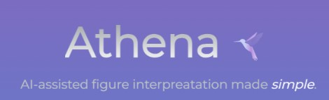
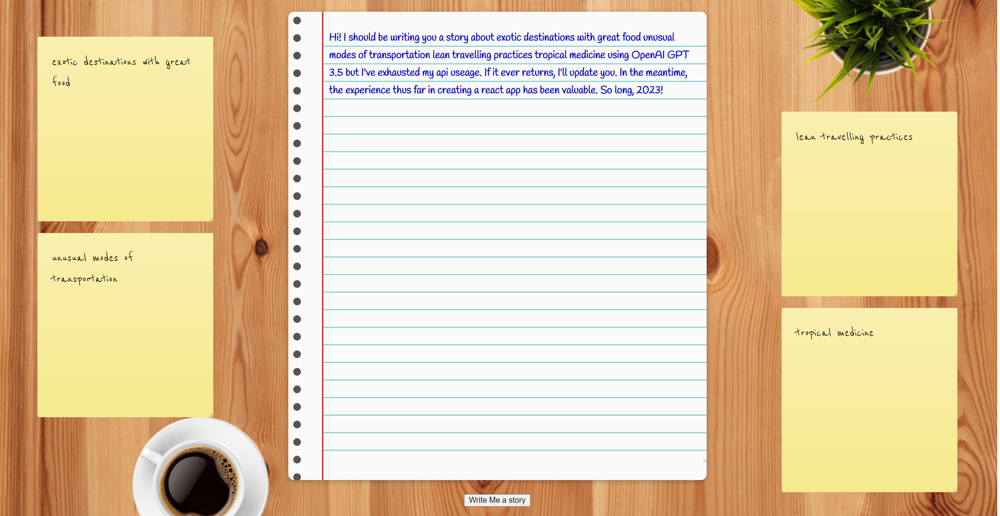
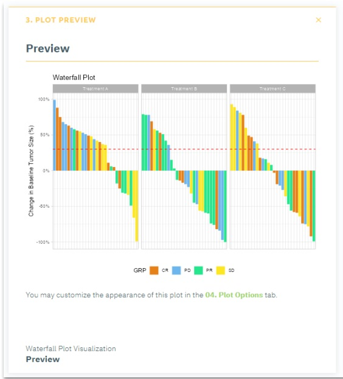
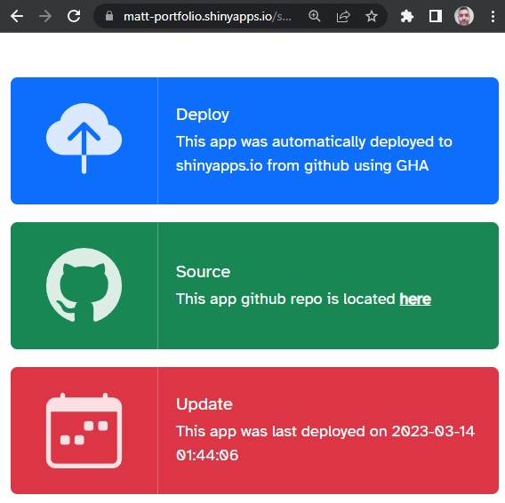
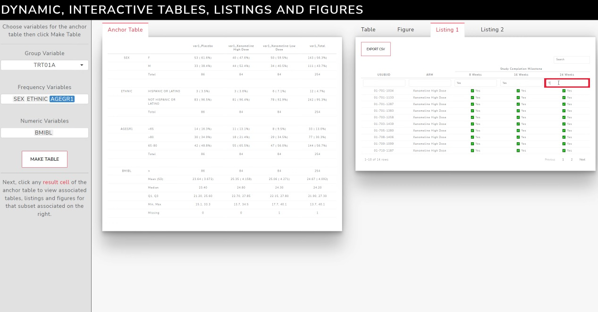
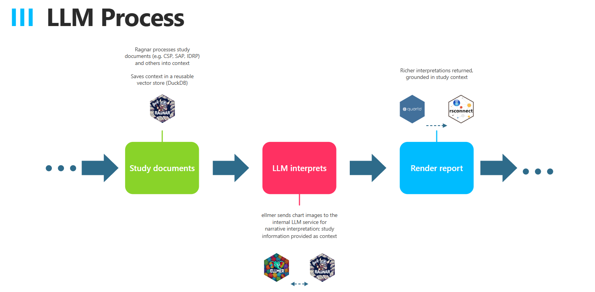
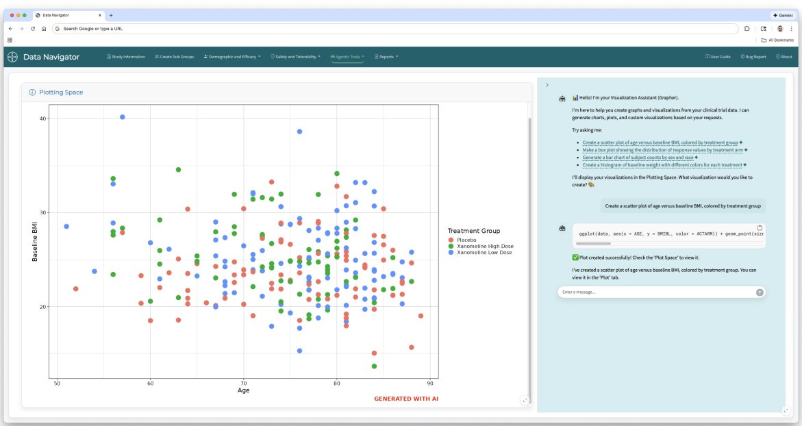
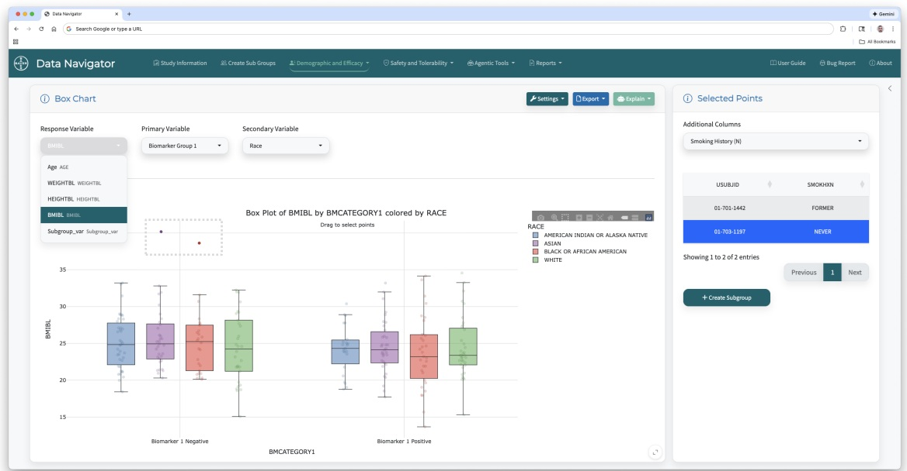
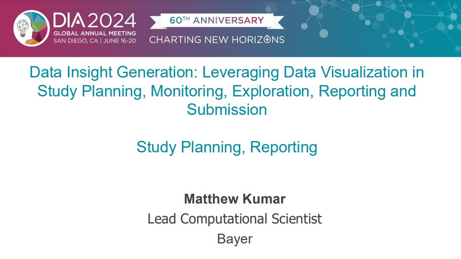

Matthew Kumar
Associate Director, Lead Computational Scientist Bayer
Biography
I’m currently an Associate Director, Lead Computational Scientist at Bayer AG in the Data Sciences and Artificial Intelligence group. I have over 15 years of experience in applying statistical methods, programming, data visualization, and real-world data (RWD) in multiple industries. My main weapons of choice are R, Python, Shiny, and git. I use them to analyze clinical trials and observational studies in both industry and academic settings, and for custom reporting, automation, and building solutions. I also enjoy prototyping and checking out new tech.
My formal education includes an MSc in Biostatistics from the University of Toronto and an Honor’s B.A. in Psychology from York University. I have taken a number of courses and workshops related to advanced analytics, software development and computing. I am a strong proponent of continuing education, self-learning and early adoption & experimentation. My current pursuits include cloud technologies such as Databricks and Azure, mastering the Posit stacking of tools, and building robust applications around large language models (LLMs).
I currently live in Pickering, Ontario with my loving wife and mini labradoodle.
Portfolio
ideas, prototypes, full-blown projects





No matching items
Recent Posts
musings, snippets, throwaways
Scoring a birthday party with Google Forms, Sheets, and QR codes instead of a Shiny app.
Monitoring LLM usage inside an AI-enabled R Shiny app.
Using LangChain custom agents to solve a document-from-image problem.
Saving and restoring Shiny sessions when bookmarks aren’t enough, plus a shinylive demo.
Notes from moving a Shiny app onto Azure — authentication, storage, and what the R packages actually do.
No matching items
Presentations
tutorials, conferences and other presentations

Weaving Posit Connect, Quarto and AI all for automated insights!

Exploring LLMs in Clinical Review Tools via R, Shiny

Clinical Review Tools via R, Shiny
Supporting the Medical Writing process with R, Shiny and GenAI

Leveraging Data Visualization in Study Planning, Monitoring, Exploration, Reporting and Submission
No matching items
Publications
academic works as a biostatistician
Kumar M, Srinivas Veeragoni (2026). Deterministic Foundations, AI Acceleration - Lessons from Developing Hybrid Clinical Review Tools. Phuse US Connect 2026(ML-20).
PDFKumar M, Srinivas Veeragoni (2023). Reproducibility of Interactive Analyses. Phuse US Connect 2023(OS-10).
PDFDaneman N, Lee S, Bai H, Bell C, Bronskill SE, Campitelli MA, Dobell G, Fu L, Garber G, Ivers N, Kumar M, Lam J, Langford B, Laur C, Morris A, Mulhall C, Pinto R, Saxena FE, Schwartz, Brown K (2022). Behavioral Nudges to Improve Audit and Feedback Report Opening Among Antibiotic Prescribers A Randomized Controlled Trial. Open Forum Infectious Diseases, 9(5). doi:10.1093/ofid/ofac111
PDFYan M, Saxena F, Calzavara A, Brown K, Garber G, Gershon A, Johnstone J, Kumar M, Langford B, Lee S, Schwartz K, Daneman N (2021). Long-term macrolide therapy for chronic obstructive pulmonary disease a population-based time series analysis. Canadian Medical Association Journal Open, 9(2). doi:10.9778/cmajo.20200157
PDFGuttmann A, Saunders NR, Kumar M, Gandhi S, Diong C, MacCon K, Cairney J (2020). Implementation of a Physician Incentive Program for 18-Month Developmental Screening in Ontario, Canada. BMJ Open Diabetes Res Care 8(1). doi:10.1016/j.jpeds.2020.03.016
Weisman A, Tu K, Young J, Kumar M, Austin PC, Jaakkimainen L, Lipscombe L, Aronson R, Booth G (2020). Validation of a type 1 diabetes algorithm using electronic medical records and administrative healthcare data to study the population incidence and prevalence of type 1 diabetes in Ontario, Canada. BMJ Open Diabetes Res Care 8(1). doi:10.1136/bmjdrc-2020-001224
PDFIaboni A, Campitelli MA, Bronskill SE, Diong C, Kumar M, Maclagan L, Gomes T, Tadorus M, Maxwell CJ (2019). Time trends in opioid prescribing among Ontario long-term care residents - a repeated cross-sectional study. Canadian Medical Association Journal Open, 7(3). doi:10.9778/cmajo.20190052
PDFCampitelli MA, Kumar M, Greenberg A, ICES/HQO Ontario Laboratory Information System Working Group (2018). Long-term macrolide therapy for chronic obstructive pulmonary disease a population-based time series analysis. Healthcare Quarterly, 6(2). doi:10.12927/hcq.2018.25630
PDFMozessohn L, Earle C, Spaner D, Cheng SY, Kumar M, Buckstein R (2016). The association of dyslipidemia with Chronic Lymphocytic Leukemia - a population-based study. Journal of the National Cancer Institute, 109(3). doi:10.1093/jnci/djw226
PDFGovindarajan A, Urbach D, Kumar M, Li Q, Murray BJ, Juurlink D, Kennedy E, Gagliardi A, Sutradhar R, Baxter NN (2015). Outcomes of Daytime Procedures Performed by Attending Surgeons after Night Work. New England Journal of Medicine, 373(9). doi:10.1056/NEJMsa1415994
PDFVahabi M, Lofters A, Kumar M, Glazier RH (2015). Breast cancer screening disparities among immigrant women by world region of origin - a population-based study in Ontario, Canada. Cancer Medicine, 5(7). doi:10.1002/cam4.700
PDFVahabi M, Lofters A, Kumar M, Glazier RH (2015). Breast cancer screening disparities among urban immigrants - a population-based study in Ontario, Canada. BMC Public Health, 21(9). doi:10.1186/s12889-015-2050-5
PDFNo matching items